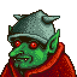
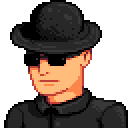

Ajudante
No misterioso e enigmático Pântano da Bruxa em Stardew Valley, há uma Cabana da Bruxa, um lugar repleto de mistérios e magia. Uma figura peculiar conhecida como "Ajudante" é encarregada de guardar este local intrigante. A Cabana da Bruxa emerge das profundezas do pântano, envolta em névoa e rodeada por árvores sombrias e criaturas místicas.

Vovô
O Vovô é uma figura espiritual na história de Stardew Valley. Ele deixa a fazenda para o(a) fazendeiro(a) no início do jogo e, ao final de cada ano, fornece uma avaliação baseada nas atividades do jogador. Apesar de sua influência simbólica, o Vovô não é um personagem ativo que os jogadores possam presentear ou interagir no decorrer do jogo.

Passarinha
Pequena, colorida e repleta de energia, a Birdie da Ilha Ginger é uma criatura adorável e única em Stardew Valley. Encontrada na Ilha Ginger, uma localidade acessível através do ônibus comunitário após a conclusão de certos objetivos, a Birdie é uma personagem cativante que encanta os jogadores com seu comportamento animado.

Gil
Gil é um funcionário da Guilda Aventureira, localizada nas proximidades das Minas de Stardew Valley. Sua principal função é gerenciar as recompensas e missões relacionadas à exploração das Minas. Embora não seja um personagem que pode ser presenteado no sentido tradicional, os jogadores podem interagir com Gil para obter missões, recompensas e informações valiosas sobre a vida nas Minas.

Governador
O Governador é uma figura misteriosa que organiza o Festival da Estrela Invernal, um evento anual em Pelican Town. Ele aparece apenas no festival, no qual os habitantes locais se reúnem na praça da cidade para celebrar. Embora os jogadores possam interagir com o Governador durante o festival, ele não é um personagem com quem se pode desenvolver amizade ou presentear ao longo do jogo.

Gunther
Gunther é o curador do Museu de Stardew Valley, localizado na cidade. Ele é responsável por gerenciar e expandir a coleção do museu, encorajando os jogadores a doar artefatos, minerais e outros itens encontrados durante suas explorações. Embora não seja um personagem casável, a interação com Gunther é vital para desbloquear novas áreas do museu e aprender mais sobre a história e geologia da região.

Marlon
Marlon é o aventureiro e dono da Guilda Aventureira, localizada perto das Minas de Stardew Valley. Ele oferece missões e recompensas relacionadas à exploração das Minas, incentivando os jogadores a enfrentarem desafios mais difíceis. Marlon é uma presença vital para aqueles que buscam aprimorar suas habilidades de combate e descobrir segredos escondidos nas profundezas das cavernas.

Morris
Morris é o representante da Joja Corporation, a empresa rival da Fazenda do Vovô. Ele gerencia a loja JojaMart, localizada em Pelican Town, e busca expandir a influência da Joja Corporation sobre a cidade. Morris não é um personagem presenteável no sentido tradicional, mas sua presença e as escolhas que os jogadores fazem em relação à JojaMart têm impacto significativo na narrativa e na dinâmica da comunidade.

Professor Caracol
O Professor Caracol, como seu nome sugere, tem uma figura única que combina a aparência de um caracol com a de um sábio erudito. Ele é frequentemente visto carregando um livro e vestindo roupas que adicionam um toque mágico à sua personalidade. Sua concha abriga não apenas seu corpo, mas também uma vasta quantidade de conhecimento sobre os segredos da natureza.

Segurança
O Segurança, com sua postura firme e olhar atento, é a primeira linha de defesa para garantir que apenas aqueles com as melhores intenções e a intenção de se divertir entrem no mundo sedutor do Cassino. Seu trabalho não se limita apenas a verificar identificações, ele também desempenha um papel importante na manutenção da atmosfera única do Cassino.

Sr. Qi